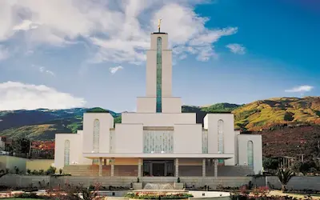
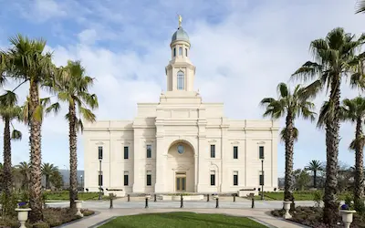
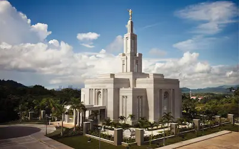

Home

Cochabamba Bolivia Temple
Kyiv Ukraine Temple
Anchorage Alaska Temple
Cardston Alberta Temple

Concepción Chile Temple
Laie Hawaii Temple
London England Temple

Panama City Panama Temple
Port-au-Prince Haiti Temple